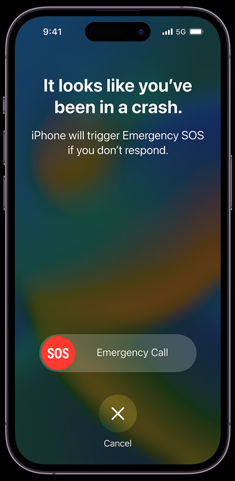
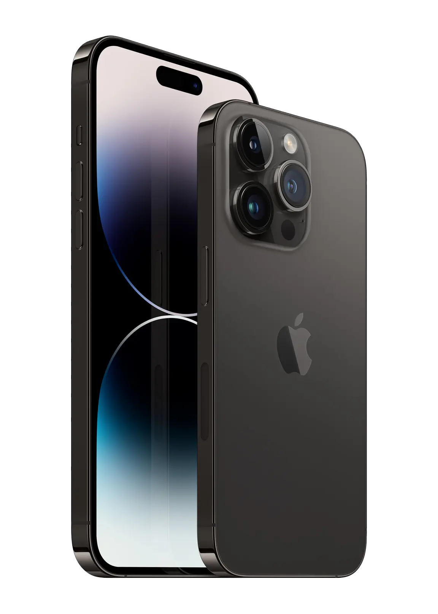
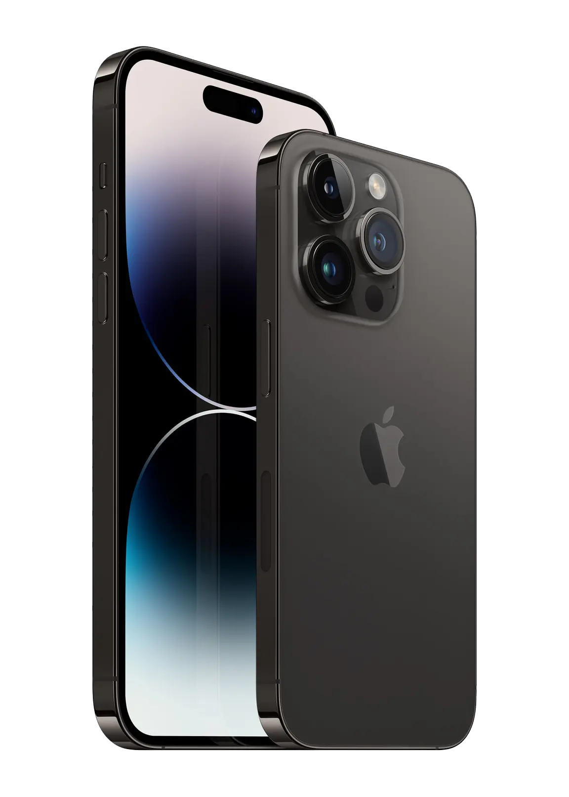

Ada yang baru di layar iPhone Memperkenalkan Dynamic Island, inovasi khas Apple yang memadukan perangkat keras dan perangkat lunak.

iPhone 14 Pro bisa mendeteksi kecelakaan mobil yang parah, kemudian memanggil layanan darurat dan memberi tahu kontak darurat Anda.
Ambil close-up dan foto grup yang paling tajam dan berwarna, berkat kamera depan TrueDepth baru dengan fokus otomatis dan bukaan yang lebih besar.
Detail jauh lebih banyak. Di pencahayaan jauh lebih rendah.


 
